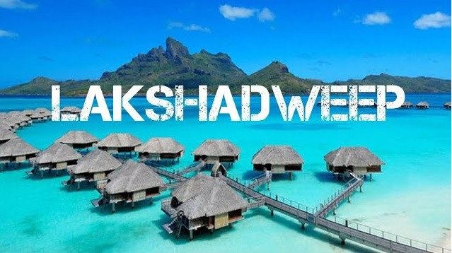
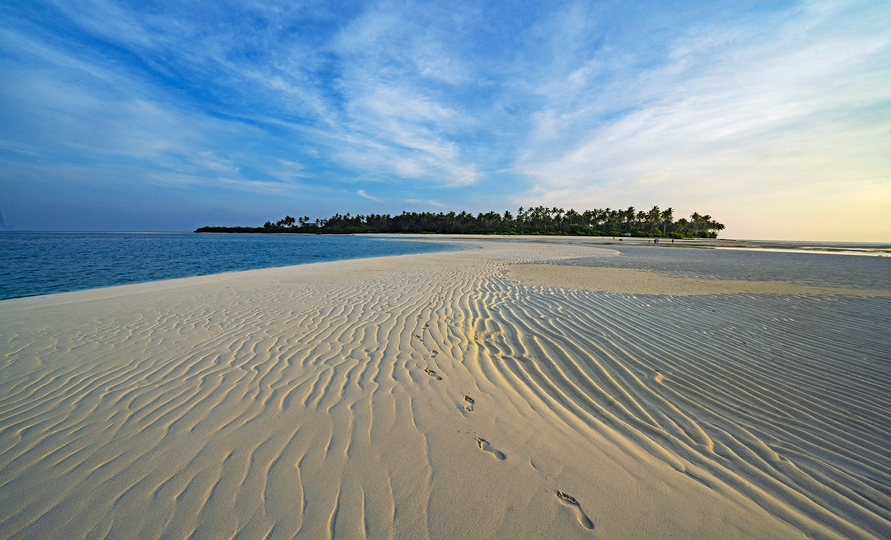
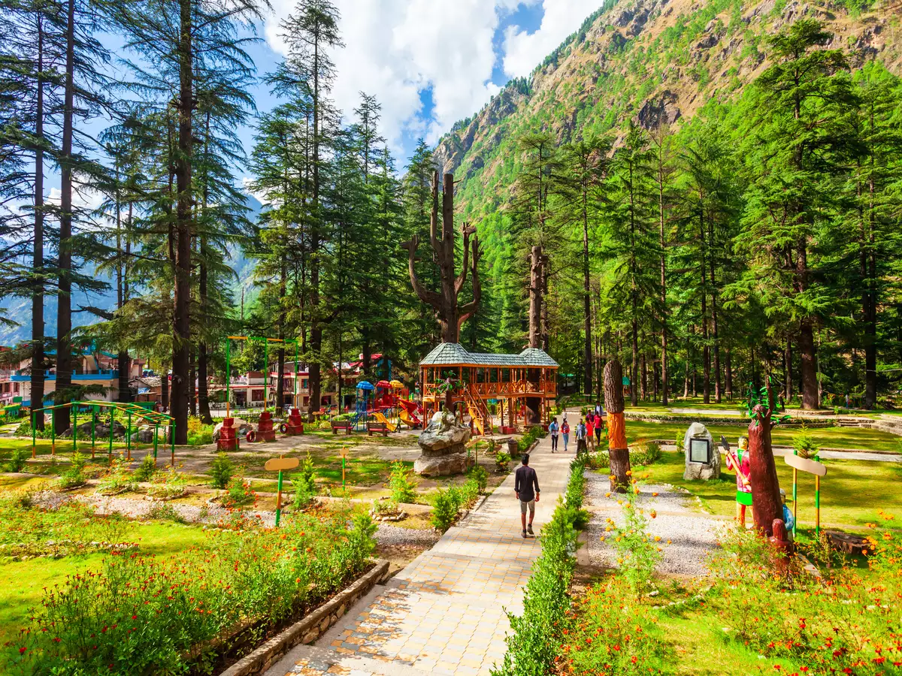

Find your next stay
Search low prices on hotels, homes and much more...
DISCOVERED NEW PLACES!!!



Lost in blue, where the sky meets the sea.
India's smallest Union Territory Lakshadweep is an archipelago consisting of 36 islands with an area of 32 sq km. It is a uni-district Union Territory and is comprised of 12 atolls, three reefs, five submerged banks and ten inhabited islands.
Learn More
Rating:
Oh, Kerala, you are pure magic.
Kerala Tourism has remained unwavering in its commitment to safeguarding the ecological and cultural richness of the state. The theme of this year's (2023) World Tourism Day is 'Tourism and Green Initiatives' and Kerala has been at the forefront of promoting sustainable tourism practices.
Learn More
Rating:


The city of dreams.
Historical and Cultural Significance: Mumbai has a rich history and cultural significance, which is reflected in its many monuments and landmarks such as the Gateway of India, Chhatrapati Shivaji Terminus, and the Elephanta Caves. These places attract tourists who are interested in exploring the city's
Learn More
Rating:
Adventures in the magical town of Manali.
Manali is synonymous streams and birdsong, forests and orchards and grandees of snow-capped mountains. Manali is the real starting point of an ancient trade route which crosses the Rohtang and Baralacha passes, and runs via Lahul and Ladakh to Kashmir while divergent road connects it with Spiti.
Learn More
Rating:




Goa: Where the sun and sea come together.
Goa is visited by large numbers of international and domestic tourists each year because of its white-sand beaches, active nightlife, places of worship, and World Heritage-listed architecture.
Learn More